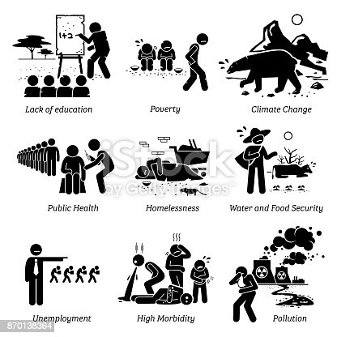

<html xmlns="http://www.w3.org/1999/xhtml">

<head>
<meta content="text/html; charset=utf-8" http-equiv="Content-Type" />
<title>QUALITY OF EDUCATION IN DEVELOPING CONTRIES </title>
<style type="text/css">
.auto-style1 {
	font-size: medium;
}
</style>
</head>
<link rel="stylesheet" href="style.css">
<meta content="en-us" http-equiv="Content-Language" />
<meta content="text/html; charset=utf-8" http-equiv="Content-Type" />
<title>About us and Credits
</title>
<style type="text/css">
.auto-style3 {
	font-size: large;
}
.auto-style4 {
	font-style: normal;
	font-size: large;
}
.auto-style5 {
	font-size: medium;
}

<body background="../../Documents/My%20Web%20Sites/Graduation+cap+represents+graded+TEFL+online+course+for+CV+proof+of+credentials.png">
<li><a href="file:///C:/Users/MS%20Tech%20Care/OneDrive/Desktop/CS_hackathon_quality%20education/QUALITY%20Instruction.html"> home </a></li>

<p>&nbsp;&nbsp;&nbsp;&nbsp;&nbsp;&nbsp;&nbsp;&nbsp;&nbsp;&nbsp;&nbsp;&nbsp;&nbsp;&nbsp;&nbsp;&nbsp;&nbsp;&nbsp;&nbsp;&nbsp;&nbsp;&nbsp;&nbsp;&nbsp;&nbsp;&nbsp;&nbsp;&nbsp;&nbsp;&nbsp;&nbsp;&nbsp;&nbsp;&nbsp;&nbsp;&nbsp;&nbsp;&nbsp;&nbsp;&nbsp;&nbsp;&nbsp;&nbsp;&nbsp;&nbsp;&nbsp;&nbsp;&nbsp;&nbsp;&nbsp;&nbsp;&nbsp;&nbsp;&nbsp;&nbsp;&nbsp;&nbsp;&nbsp;&nbsp;&nbsp;&nbsp;&nbsp;&nbsp;&nbsp;&nbsp;&nbsp;&nbsp;&nbsp;&nbsp;&nbsp;&nbsp;&nbsp;&nbsp;&nbsp;&nbsp;&nbsp;&nbsp;&nbsp;&nbsp;&nbsp;&nbsp;&nbsp;&nbsp;&nbsp;&nbsp;&nbsp;&nbsp;&nbsp;&nbsp;&nbsp;&nbsp;&nbsp;&nbsp;&nbsp;&nbsp;&nbsp;&nbsp;&nbsp;&nbsp;&nbsp;&nbsp;&nbsp;&nbsp;&nbsp;&nbsp;&nbsp;&nbsp;&nbsp;&nbsp;&nbsp;&nbsp;&nbsp;&nbsp;&nbsp;&nbsp;&nbsp;&nbsp;&nbsp;&nbsp;&nbsp;&nbsp;&nbsp;&nbsp;&nbsp;&nbsp;&nbsp;&nbsp;&nbsp;&nbsp;&nbsp;&nbsp;&nbsp;&nbsp;&nbsp;&nbsp;&nbsp;&nbsp;&nbsp;&nbsp;&nbsp;&nbsp;
<em><strong><span class="auto-style1">QUALITY OF EDUCATION</span></strong></em>&nbsp;</p>

<hr/>


<p><strong><em>What are the problems of education in developing
<span class="auto-style1">countries</span>? </em></strong><br>10 obstacles to 
overcome to improve education in developing.<br>*Inequality: The world's 
illiterate population consists of 780 million people. <br>* Primary education.<br>
*Inefficient school networks<br>* Involving parents <br>*Lack of 
democratisation.<br>* Economic recession <br>*Lack of expertise<br>* Lack of 
teaching staff</p>
<p><em><strong>why is education so bad in developing contries?<br></strong></em>
The problem in many developing countries is that&nbsp;governments lack either the 
financial resources or the political will to meet their citizens' educational 
needs. <br>In response, poor parents in some low income countries have organized and 
paid for their children's education themselves. </p>
<p></p>
<p><strong><em>secondary school attendance low accross the devoloping world?</em></strong></p>
<p>Many countries face very low enrolment and attendance rates because of the 
economy of the community. Our country has recent developments in the economy and 
the education sector but still has a attendance and enrolment rate of 89%-60%
<a href="https://chat.google.com/u/0/api/get_attachment_url?url_type=DOWNLOAD_URL&amp;attachment_token=AAUuIGuLJm5vgpYG7jLM8jPVYtUzOwVUsxORwBLSF7LePoqGrzobxgVpDf2Kd4kf5heIbdTJdD3kZxH3v9ouQ3%2FFJcyWsq97Li4gZKQ4YCmLYuqH0H%2FfYvpg6um9insrymZwA7lxV0gIdY4KrUMX2YXP2teBF0Op0s49amaNfysMaD9XNpaUHyD452YDHMu2rTyud4XnwrDglSJv9cko9VqsnahapSdC16bQ4n0jeSOSel%2B4kbsfK80iONkR3y%2FCgI%2FiNhrgM4Hs3EyuMdCO1xLP4K5%2BKS7xecL8bngT7Lut4kOLzqLtqmi1MaFOqvyyiMoVtW42QBv9sXqwJGi4Wzxg35RcX7%2Fuk3UPHzVQ6UhoysNAOh2Q3YJUed0Q9XvQwmLQ6KHJjS%2FORCr0VbW8RSikg5Z1axyjmhlUNHRQ&amp;content_type=image%2Fpng&amp;auto=true">
</a><br></p>
</body

</html>
